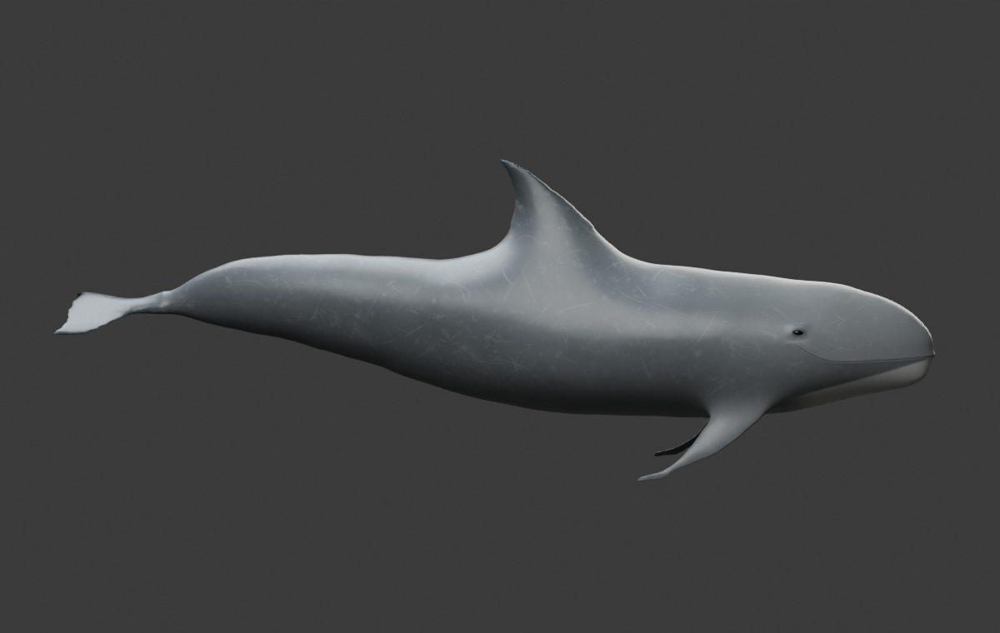
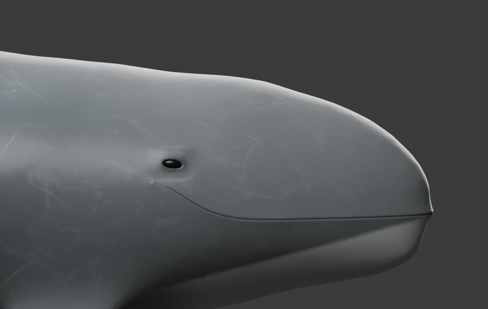
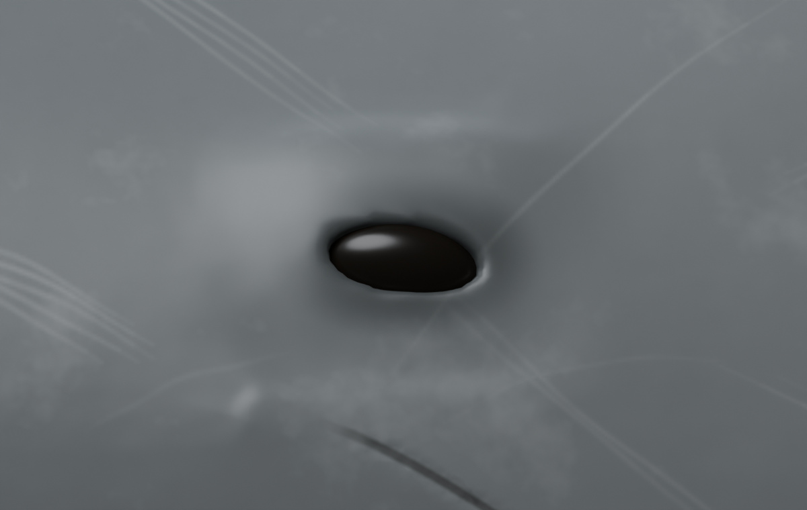
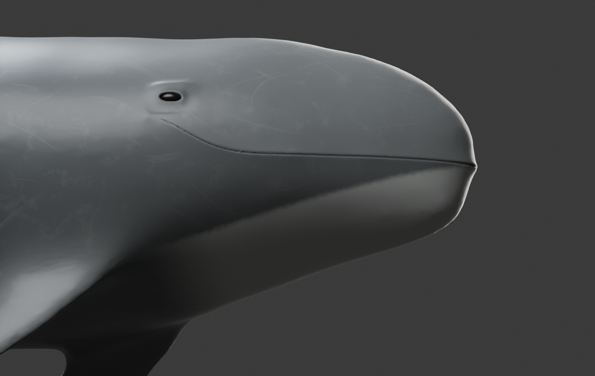

← Open the interactive Risso’s dolphinBLENDER REVISION · 7 NOVEMBER 2026
Risso’s dolphin: eyes, mouth and chin
The archive now displays its local model directly. The face now has fuller almond-shaped skin apertures, more deeply inset eyes with subdued reflections, and a faired closed oral margin. A soft pale chin patch follows the connected jaw skin. The surface has been faired and given original gray pigment, varied pale scars, and separate roughness and fine normal maps.

Actual Blender render. Original asymmetric pigmentation represents one illustrative adult; markings vary between animals.
The eyes and closed mouth are part of the local editable reconstruction.
Eye detail in Blender. The browser uses an optimized derivative with the same baked pigment and roughness.This is a revised artist reconstruction, not a scanned specimen. Independent photorealism and biological validation remain pending. Swimming and turning are illustrative studies; feeding mechanics and measured hydrodynamics are not implemented.

Pale jaw pigment wraps underneath the chin with a soft boundary; individual markings vary. The chest anchor is a separate anatomical region.Sources and editable assets
Source mesh: ivan.geraldo, CC BY 4.0. PhenoVoxel modifications: body fairing, face sculpt, original materials, and authored movement. The reference artist’s restricted model and textures are not included.
Anatomical guidance: NOAA Fisheries species account and NOAA identification guide. The blunt beakless head, upturned mouth and pale healed scars guide the reconstruction. Baird’s species account describes pale pigment around the mouth and an anchor patch between the flippers; a sharp identical chin triangle is not a universal species marking. Scar layouts and material values are authored.
Blender frame 1 is neutral. The native rig retains the axial swimming study. The browser deforms the optimized exterior separately, with dorsoventral posterior strokes and a neutral reset.